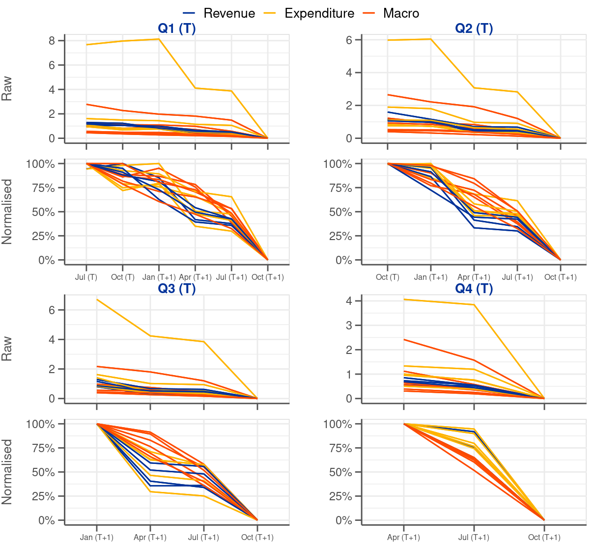
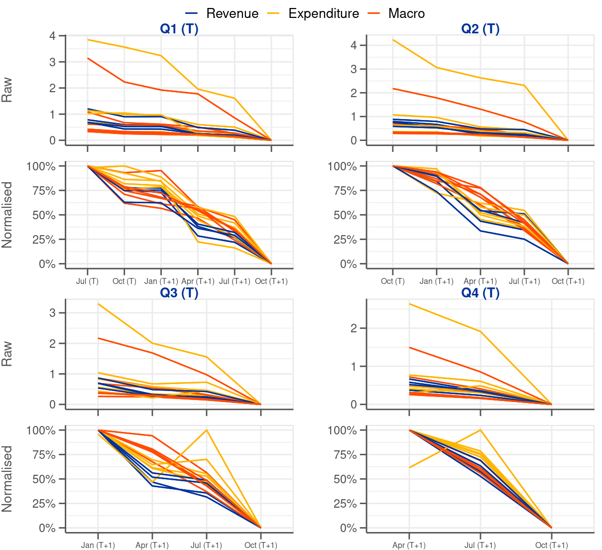

| Expl. variable | N | F-value | Compl/Naive | Intrm1/Naive | Intrm2/Naive | Intrm3/Naive | Intrm4/Naive | |
|---|---|---|---|---|---|---|---|---|
| Total revenue | 384 | - | 1 | 1 | 1 | 1 | 1 | |
| Direct taxes | 402 | - | 1 | 1 | 1 | 1 | 1 | |
| Indirect taxes | \(R_{t-4,m}\) | 402 | - | 0.99 | 1 | 1 | 1 | 1 |
| Social contributions | \(x_{t,m}^{1}+R_{t-1,m}\) | 384 | 0 | 0.98 | 0.99 | 1 | 1 | 1 |
| Total expenditure | \(1_{\left[t\geq2014Q2\right]}\) | 384 | - | 0.99 | 0.99 | 0.99 | 1 | 1 |
| Social transfers | \(\sum\limits_{j=1}^{4}Q_{t}^{j}+1_{\left[t\geq2014Q2\right]}+x_{t,m}^{1}\) | 402 | 0 | 0.94 | 0.94 | 0.99 | 0.99 | 1 |
| Purchases | \(\sum\limits_{j=1}^{4}Q_{t}^{j}+x_{t,m}^{1}\) | 384 | 0 | 0.87 | 0.87 | 0.99 | 0.99 | 1 |
| Gov. compensation | \(1_{\left[t\geq2014Q2\right]}+x_{t,m}^{1}+R_{t-5,m}\) | 384 | 0 | 0.96 | 0.97 | 1 | 1 | 1 |
| Gov. investment | 384 | - | 1 | 1 | 1 | 1 | 1 | |
| GDP | 444 | - | 1 | 1 | 1 | 1 | 1 | |
| Private consumption | 442 | - | 1 | 1 | 1 | 1 | 1 | |
| Total investment | \(x_{t,m}^{1}+R_{t-4,m}+R_{t-5,m}\) | 443 | 0 | 0.95 | 0.97 | 1 | 1 | 1 |
| Exports | \(R_{t-2,m}+R_{t-4,m}\) | 437 | 0 | 0.92 | 1 | 1 | 1 | 1 |
| Gov. consumption | 428 | - | 1 | 1 | 1 | 1 | 1 | |
| Wages and salaries | \(\sum\limits_{m=1}^{10}C_{m}+R_{t-1,m}\) | 420 | 0 | 0.92 | 0.92 | 0.92 | 0.92 | 0.92 |
Appendix C — Complementing results


| Function | Formula | Break | Link |
|---|---|---|---|
| $$ | \(\leftarrow\) | \(R_{t-4,m}\) |